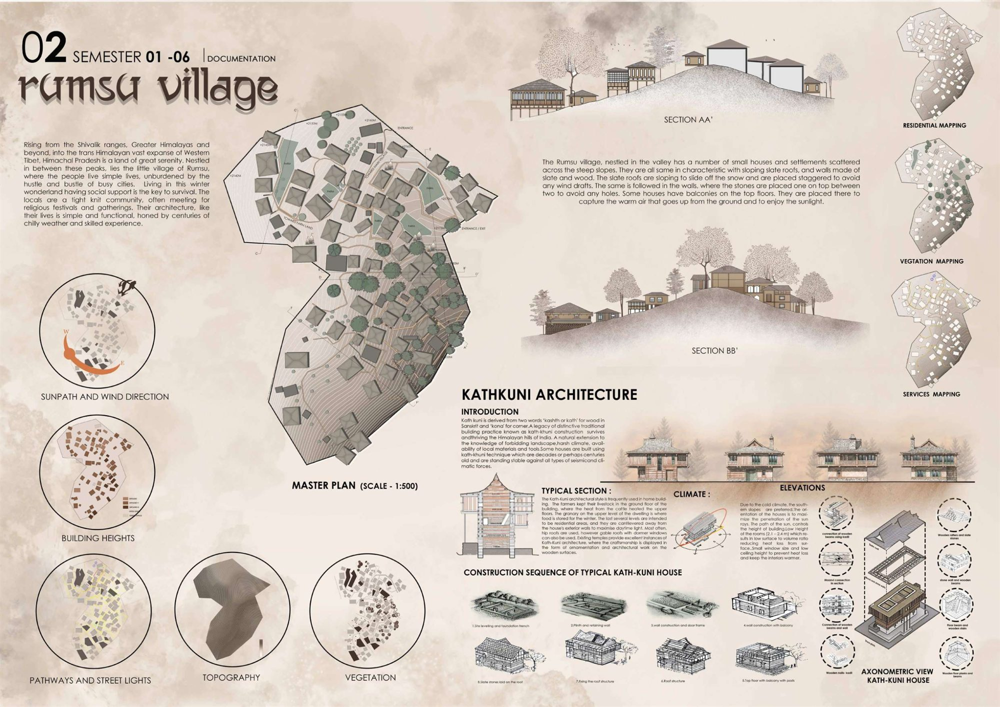

Work / 10 · Documentation
Rumsu Village
Kath-Kuni architecture in a Himalayan settlement near Manali, Himachal Pradesh.

- Type
- Documentation
- Location
- Rumsu, near Manali, Himachal Pradesh
- Scope
- Settlement mapping, master plan at 1:500, site sections, study of Kath-Kuni construction
Rumsu is a small village on the steep slopes of a Himalayan valley, where houses and settlements are scattered across the hillside. Life is simple and closely knit; in a hard winter landscape, social support is the key to survival.
The houses share one language: sloping slate roofs, staggered to shed snow and keep out wind, and walls of stone and timber. That language is Kath-Kuni (from kath, wood, and kuni, corner), a building tradition that uses local materials and simple tools, and has stood up to earthquakes and harsh weather for centuries. Livestock live on the ground floor and their heat rises to the rooms above; grain is stored at the top. Low ceilings and small windows hold warmth in, houses face the sun on south-facing slopes, and upper-floor balconies catch the warm air rising from the ground.
01Mapping the settlement
The village was mapped for sun path and wind, building heights, pathways and street lights, topography, vegetation, residences and services, and drawn as a master plan with two site sections.


